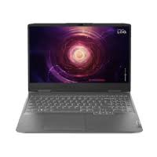
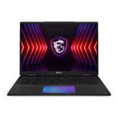

Laptop atau komputer jinjing adalah komputer pribadi yang berukuran relatif kecil dan ringan sehingga sifatnya portabel.[1] Beratnya berkisar dari 1–6 kg, tergantung pada ukuran, bahan, dan spesifikasi laptop tersebut. Sumber daya laptop berasal dari baterai atau adaptor A/C yang dapat digunakan untuk mengisi ulang baterai dan menyalakan laptop itu sendiri. Baterai laptop pada umumnya dapat bertahan kurang lebih 2 hingga 6 jam sebelum akhirnya habis. Habisnya baterai bergantung dari cara pemakaian, spesifikasi, dan ukuran baterai. Laptop terkadang disebut juga dengan komputer notebook atau komputer pangku, untuk ukuran yang lebih kecil disebut sebagai netbook.
Laptop adalah komputer pribadi yang bisa dipindahkan dan dibawa dengan mudah. Laptop memiliki ukuran yang relatif kecil dan ringan, sehingga bersifat portabel.
Berikut adalah beberapa hal yang perlu diketahui tentang laptop:
Fungsi
Laptop memiliki fungsi yang sama dengan komputer desktop, yaitu menjalankan perangkat lunak dan mengelola berkas. Laptop juga bisa digunakan untuk hiburan, seperti menonton film dan video, serta sebagai tempat untuk berkreasi, seperti membuat desain atau menggambar.
Bagian-bagian
Laptop terdiri dari beberapa bagian, seperti monitor display, keyboard, dvd drive, port input output, processor, hardisk, dan memory.
Nama
Nama laptop berasal dari cara penggunaannya, yaitu diatas pangkuan atau "Lap Top".
Energi
Laptop mengubah energi listrik menjadi berbagai bentuk energi lainnya, seperti energi panas dan energi cahaya di layar.

Laptop atau komputer jinjing adalah komputer pribadi yang berukuran relatif kecil dan ringan sehingga sifatnya portabel.[1] Beratnya berkisar dari 1–6 kg, tergantung pada ukuran, bahan, dan spesifikasi laptop tersebut. Sumber daya laptop berasal dari baterai atau adaptor A/C yang dapat digunakan untuk mengisi ulang baterai dan menyalakan laptop itu sendiri. Baterai laptop pada umumnya dapat bertahan kurang lebih 2 hingga 6 jam sebelum akhirnya habis. Habisnya baterai bergantung dari cara pemakaian, spesifikasi, dan ukuran baterai. Laptop terkadang disebut juga dengan komputer notebook atau komputer pangku, untuk ukuran yang lebih kecil disebut sebagai netbook.
Netbook merujuk pada spesies komputer jinjing yang memiliki spesifikasi tertentu. Sebuah netbook umumnya menggunakan prosesor Intel Atom. Jenis komputer jinjing ini berukuran kecil, biasanya dengan layar di bawah 12 inci dan berat kurang lebih 1 kg.
Netbook mulai populer ketika Asus mengeluarkan produk bernama Eee PC.[butuh rujukan] Ketika itu, komputer dengan harga murah ini menggunakan harddisk layaknya sebuah media penyimpan portabel USB Flash Disk (UFD), dengan kapasitas rendah 4GB.